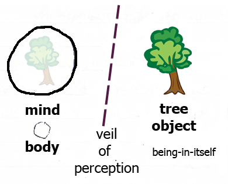

Definition: e is a basis for h iff:
Definition: e is a basis for h iff:
Theory of Knowledge
Philosophy 102 Lecture Notes
These are lecture notes of the course Philosophy 102 taught at University of California, Davis in the Winter quarter of 1983 by Dr. George Mattey with notes taken by S. M. Halloran.
This web document represents a transcription of the original handwritten lecture notes entered into a spiral-bound standard university notebook. The original notes were imaged using a scanner and the pages collected into a non-text searchable PDF document.
Any egregious errors in concepts or fundamentals are mine (the student): despite every attempt of the instructor to make the material stimulating and interesting and to penetrate the thickest of skulls, you the reader certainly realize that note-taking students are distracted by numerous other things during lecture and will certainly miss the vital point(s) of the lesson. Do the proper thing in resolving all doubts by looking up original works and references.
The motivation to transcribe these handwritten notes to searchable web document form is explained below.
6 Jan 1983
Among the great figures in philosophy related to the theory of knowledge are Plato, Aristole, and particularly John Locke, in his Essay Concerning Human Understanding, wherein he gives a thorough account of:
As to nature, from the empiricist view, all knowledge derives from experience.
| world | propositions about the world |
|---|---|
| Tootsie's being a man | Tootsie is a man |
| fact | knowledge fundamental |
In the film Tootsie, an unemployed man dressed as a woman in order to get a job that was essentially given only to women. It is a fact that Tootsie is a man although appears to be a woman, and we can make a proposition that Tootsie is a man which corresponds to the fact. The fact is the fundamental of knowledge.
If a proposition is true, is it still the case that anyone knows it? Has anyone expressed it or had it as a thought?
First Conditions. If someone s knows that p, then there must be a special relationship between the person s who knows and the proposition p. This is called the propositional attitude, an attitude whereby one accepts the truth which one asserts. You must be convinced, and thus have a positive attitude about the veracity of the statement.
The strongest degree of acceptance of a fact is called an overt knowledge claim.
Habit or memory is stimulated when s truly believes or knows p.
Second Condition. If s knows that p, then s believes that p. Note that the converse is not true: if s merely believes that p>, then it does not imply s knows that p. Beliefs can in propositions who truth status can absolutely be in that which is false or not real. Moreover a belief is not always (necessarily) useful.
got luckyin believing it, since when asked to produce evidence of that something being true, no evidence can be produced
Third Condition. If s knows that p, then s is justified in believing that p. These series of lectures will focus on this aspect of knowledge.
Philosophers in epistemology divide into two camps, based upon the distinction of
The camps include are:
it's inside you, the justification of belief is to question the reasons the believer possesses, and these can be used as evidence for the truth of p.
lucky), or by a reputation established for acquiring knowledge. Those who believe in this view would state they are in a frame of mind to be receptive to knowledge data.
For the internalist, s believes that p is justified because
s believes q, and q is the reason or justification.
In addiiton q must be supported by r in a chain of support.
Aristotle's argument demands that we proceed ad infinitum in an
infinite regress of justification. Aristotle recognized that this could
pose a problem in which the establishment of justification remains in infinite
regress, or that the justification might end up being circular (everything
depends on everything else
). Those who believe though in a justification
that might be circular are adherents of coherentism
These will be explored in the series of lectures.
11 Jan 1983
In understanding concepts of knowledge, it is important to have a sense of
what it is to know
:
The information item represents factual knowledge, knowledge which
is the case, and the word that
is a pointer to the proposition
which is the case.
In the USA and UK, analytic philosophy is usually an approach in which language is analyzed: words and their meanings and how communication is used to express meaning (meaning analysis, semantics). Meaning analysis essentially is an analysis of what conditions exist to make a person believe what he knows. Denotative analysis is an analysis is an attempt to ascertain the conditions by which a person is said to know, and is a preferred kind of state.
In semantics, the term meaning expresses what are the definition and synonyms of words, and the term reference is a denotation which is outside of the language.
Consider what conditions which establish that the weather is foggy. What are the necessary and sufficient conditions for being foggy. Of course the logical equivalent is:
Proceeding from this fundamental concept of logic, that of equivalence, the essence of a theory of knowledge is proposed.
It is important to understand the meaning of this, because there is logical equivalence here:
For the three consequents of the iff statement, these are sufficient conditions for s to believe p. But as Lehrer (a proponent of coherentism) describes it, are all these conditions sufficient for s to know p? (Knowledge here is in the philosophical sense.) And are all conditions above necessary for knowledge? How do we verify the analysis, Lehrer's definition of knowledge?
Take an object of indubitable knowledge, something that meets the condition of being a pre-analytical intuition, and then compare it to the statement of the theory of knowledge above to determine if the conditions required for knowledge are not wholly there, yet not lacking any other condition.
Consider also the question of S knows that p
expresses the
idea that S claims to know that p.
Those who
claim to know something would assert that they are knowing.
Now looking at the three conditions above for knowledge, we have the condition of truth, of belief, and of justification.
Truth Condition. There are two theories at work here related to truth condition:
Naturally it is (1) we are concerned with, although when (1) is true, (2) is always true (q.v., Ch. 2 of Chisolm).
Belief Condition. The concept of conviction and of absolute certainty is seen as a case for what is highly probable. Absolute certainty is not a necessary condition for knowledge, for knowing something. For knowledge, we must have:
Justification Condition. This requires that other conditions of
knowledge above are established and which make knowledge complete. Justification
is completely relative, internal, and subjective. This condition demands that
there is evidence for all data which is required: truth is not subjective,
whereas justification is. In addition, for the foundationalism of the
internalists, justification requires basic beliefs.
Consider a counterexample: that of justifcation without falsity. If p is true (T), and believed (B), and justified completely (J), then the basis for knowledge (of knowing it) is met: call this the JTB set of conditions.
But Gettier (1963) found a flaw in this, in that there could be JTB set of
conditions, but it was possible not to have knowledge. Note these
examples are called Gettier-type
examples or models.
Suppose that p is justified, found true and also believed, but the JTB conditions that were met were completely accidental. S had a plausible justification, believed it, and p was true, but did S really know it?
Impose now a fourth condition for knowledge to tighten up the criteria: this is that a justification cannot rest upon a false belief. If there is a dependence on unsound premises, then there is no knowledge. It is still possible to accept a falsehood, but remain justified.
For example:
In statement (1), the part in blue is a false, but the whole statement is true because it asserts a probability that is high that the clause is true. In statement (2), the whole statement is false, and it is couched in the statement (1) as well. Statement (1) is not completely justified now despite being true because of the truth status of statement (2). Statement (3) becomes less justified because statement (2) is false.
13 Jan 1983
The terms of epistemic appraisal form the crux of
It should be noted that Chisolm's text on the theory of knowledge that the term belief and acceptance are used interchangably. Application of a logic involves the use of rules and being able to represent these concepts in the abstract.
Propositions are such that a state of affairs is described: what is the case,
and what is true. Key operative words (operators
) are and,
or, and not, but also include if...then and other words
that can be represented in logic. Chisolm uses the symbols A and W
to be variables expressing attitudes toward the proposition p
by S at time t. Thus:
The analysis of acceptance indicates that S essentially believes p, or S finds p to be true.
In rejecting a proposition p, there is the connotation that there is an acceptance of its negation, ~p, a disbelief.
There is however a middle ground as well: withholding is essentially the withholding of belief, the suspension of judgment to believe.
Thus S does not believe (disbelieves) p iff S accepts ~p.
It is also true that Wstp iff ~Astp and ~Ast~p.
What is preferable: to accept, withhold, or reject? The decision should be based upon objectively decided criteria, for useful knowledge applies to all three decisions.
Consider the following definitions (statements with their symbolic representations):
At this point a functional notation can be used as follows: r(Ah) = it is reasonable to accept h, and so r(Ah) > r(Ai) = it is more reasonable to accept h than to accept i.
Another term of epistemic praise is:
Sh iff r(Ah) > r(A~h)
its qualitative opposite is that there is no presumption in favor of h if and only if it is more reasonable to accept not-h than it is to accept h:
Nh iff r(Ah) ≤ r(A~h)
From these definitions, we can make the following assertions
Bh ⊃ Sh
Bh ≡ r(Ah) > r(Wh)
Sh ≡ r(Ah) > r(A~h)
Consider the following arguments and their conclusion, which shows a derivation:
This argument states that if it better to either accept or to reject h than to withhold acceptance of h in either case, then if h is beyond a reasonable doubt, then there is a presumption in favor of h. This is a derivation of the definitions above.
Chisolm (p. 13) asserts that r(Ah) and r(A~h) represent either extreme of r(Wh). In general, the hierarchy or progression of knowledge is at first to withhold (r(Wh)) and then either to accept (r(Ah)) or to reject (r(A~h)).
Uh ≡ r(Wh) > r(Ah)
Note that U~h ≡ r(W~h) > r(A~h)
Because Ah iff r(Wh) ≤ r(Ah), it can be inferred that Bh ⊃ Ah, meaning that if h is beyond a reasonable doubt, accepting h is quite logical.
And we can continue to derive/extend definitions from what has been shown above:
A point not yet made but which is quite obvious is the equivalence of withholding the acceptance or rejection of h, namely that r(Wh) = r(W~h). Suspending judgment means not deciding one way or the other., which is the statement of that (see Chisolm, p. 13).
Now given that Bh ⊃ U~h and r(Wh) = r(W~h), we can derive by substitution this relationship: r(Ah) > r(W~h) ⊃ r(W~h) > r(A~h). This states that if is more reasonable to accept h than to reject withholding that acceptance, then it is more reasonable to reject withholding acceptance of h than to reject acceptance of h.
Similarly it is true that U~h ⊃ Bh: if it is unacceptable to reject h then h is beyond a reasonable doubt. So the relationship is also derived: r(Wh) > r(A~h) ⊃ r(Ah) > r(Wh). This states that if is more reasonable to withhold h than to reject h then it is more reasonable as well to accept h than to withhold h.
The extreme skeptic Aggripa thought that the condition U~h ⊃ Bh demanded that everything should be doubted that did not rise to the level of being beyond a reasonable doubt. The modern skeptic however would choose to accept rather than withhold judgment. Positivists withhold judgment on metaphysical questions, but accept propositions on practical matters.
Certainty. On top of the scale of epistemic praise is being certain.
This is not the case of it being a psychological attitude
or of
undeniability
, rather it is an absolute, objective property in the theory
of knowledge.
We thus have a definition: Ch = h is certain:
Ch iff Bh and ~(r(Ai) > r(Ah))
which is equivalent to, when substituting for equivalent statements for Bh,
Ch iff r(Ah) > r(Wh) and ~(r(Ai) > r(Ah))
This states that h is certain if and only if h is beyond reasonable doubt and it is not the case that it is more reasonable to accept an alternative proposition i than it is to accept the proposition h. The substitution can be stated that h is certain if and only if it is more reasonable to accept h than to withhold judgment about h and it is not more reasonable to accept the alternative.
Note this extra condition: for no proposition i, which is an alternative
and which displaces
h, is it more acceptable than h.
Being Evident. Eh = h is evident>:
Eh iff Bh and, for any i, if r(Ah) > r(Ah), then Ci
Chisholm will aim his third condition, namely his justification condition, upon what can be presented as evident (Ei).
Finally the epistemic praise scale and the relative value of knowledge is shown on the scale at left.
18 Jan 1983
The Directly Evident
Consider the purpose of advancing concepts concerning the relationships between persons. In the previous lecture it was noted that being evident was the penultimate position for Chisholm's epistemological status.
The directly evident is a qualification for the evident to justify tenets that will serve as a foundation for all knowledge. The process of building upon knowledge as a foundation is criticized by Lehrer. Chisholm must respond to the skeptics and answer how a justification for the directly evident begins.
In the first point, it is noted that Descartes was the first historically to employ
methodological doubt
as a routine to discovering indubitable and clear
and distinct ideas. Kant was a little more expedient and practical in his
wisdom: radical skepticism served no purpose, and the business must proceed to
get down to setting up a system of metaphysics and ethics.
In the second point, Chisholm indicates that justification is an internalist concept. Belief and conviction with a perfect grounds and reason can be analyzed as knowledge claims and give the stamp of really knowing.
The third point is that upon discovering what is found to be directory evident in the paradigm cases of justification, general principles are formulated and applied to all cases that follow.
Many questions arise after a proposed conclusion or theory is presented with the
main question being What is the evidence of h given by S?
S then proceeds with an explanation in a logical format. If proposition
i is evidence for proposition h, then Eh because Ei,
Ei because Ej, ..., until we attain a proposition i such
that it is directly evident, or self-evident, or emotionally shaking.
The justified position that z is F might be questioned when the
statement z is F
is merely spoken or uttered. Would
reiteration serve the purpose of establishing it to a point where it was no
longer questioned? This principle might be represented as:
Fa ⊃ E(Fa)
Evidence to a certain person which follows belief and conviction is considered
self-presenting
and is accompanied by a plainly obvious philosophy of
Leibniz.
Ordinary perceptual propositions are not self-presenting or directly
evident, and do not find their status high on the epistemological scale.
It can be expressed If A, then it is evident that A,
but not If A, then it is directly evident that A.
A definition for self-presenting involves:
Sometimes in an existential instantiation an existential generalization can be made of the type:
This follows as a fact of the world. From this there is a procession closely to the status of what is directly evident.
h is directly evident for S if:
For the example ahove, statement a corresponds to proposition e and statement b corresponds to proposition h.
The ancient Greeks brought up the problem of negative propositions, which confused the issue of knowledge. Consider the statement:
I do not seem to see a dog now.
Chisholm asserts that a concept must be understood before it is (meaningfully) used. No one asserts that something is evident unless prior experience is warranted. The first step in establishing the system is the self-presenting proposition (says Chisholm).
I do seem to see a dog now.
This statement establishes that we are aware of the evidence of the dog. In considering the negative proposition, it is simultaneously necessary to assert the proposition that is also positive.
These terms of perception can refer to belief (conviction), but they
hedge on a commitment to epistemological status. This use is
incompatible
with knowledge.
When someone claims to know, it is important that one will defend the claim or the issue.
Phenomenological seeming
is a case of the state of mind itself
greatly influencing perceptions. It generally argues for the idea that
sense data are themselves self-presenting propositions. For example
The apple looks or appears red.
This psychological datum is a formal cognition solely of one's mind (no other). All verbs of the form appears can be changed to something more substantive:
There is a red appearance before me. {a sense datum}
This change in wording / syntax is necessary to convey exactly what happens, so that the appearance is not in one's mind, but rather given to one's mind.
In an adverbial analysis, the wording might look like:
I am appeared to redly.
20 Jan 1983
 The main group of propositions whose knowledge is based on what is directly evident according to Chisholm begin as basic beliefs:
If p then Ep.
I am being appeared to redly
The reason for structuring the language this way is to show a subjective state of the perceiver. These are special subjective objects of perception.
Is one object, when in the mind, in the mind? Is it consciousness of something? The transcendental nature of the thing is an object-in-itself.
Chisholm discusses some objections to these appeared-to
propositions:
while blue
for example is an expression of objectivity, the sensation
is wholly subjective. Any term used to fill in the blank to the statement
I am appeared to —ly
states that there is a correspondence between
perception and an actual object which is self-presenting.
It is suppose to seem obvious that we will find it necessary that the thing-in-itself exists.
As an opponent of the concept, Lehrer offers a poor view of foundationalism. What does belief have to do with? On one side is the foundational basis and on the other is justification refutation.
The first characteristic(s) of a basic belief are that they are:
note that this characteristic is difficult to reconcile because any belief which justifies it may lead to coherentism (recall these definitions from Chisholm) (Directly for) accepting p is presupposed by accepting some self-presenting q
Cogito is self-presenting: someone thinks
is directly evident. We
can say the directly evident is less basic than the self-presenting in this
case. Here there is an order.
Lehrer's Rationalism and Empiricism. Rationalism is chiefly associated with Descartes: the origin of knowledge is complete reason. In empiricism, it is either sense-perception or self-perception (reflection), which is an introspection, whose proponents were Hume, Berkeley and Locke. Reason is employed by the empiricists however as a tool of deduction or analysis. Some propositions, being analytic, are true because of logical form:
All horses are horses
That statement is true by virtue of its structure, but it is an empty word analysis, providing no substantive knowledge. Other propositions, being synthetic (as opposed to analytic), reveal their truth coming from matters of fact and not of form or coming from experience:
Horses run swiftly
Basic beliefs would be observation sentences, simple statements of perception such as
a is F
where a is the object of sense experience, either a physical object or an appearance, and F is a quality or relation discernible by the senses.
The rationalists take a different track: observational statements are basic in that they are intuited, and that intuition is the part of reason devoid of experience.
There is an argument that reason does certify certain sense-perceptions and some elements are needed to have a good theory of knowledge.
Pure rationalism would (of course) not allow us to know that obects exist.
Principles of noncontradiction are analytic and do not help us to proceed toward
any knowledge. They do not deny senses particularly. They state or think that
if we were to have infinite minds that we would be able to deduce all knowledge
from first principles. Lehrer in the end believes there is a necessary mixture
of rationalism and empiricism. Quine tried to show that there is no distinction
between the analytic and synthetic (Two Dogmas of Empiricism
).
He believed they flowed into each other.
Look at the principle of
noncontradiction: there are elements which help us in experience to
not formalize this.
A basic belief must guarantee the truth of what is believed.
Anything which is self-justified is of this quality. It is thus logically
impossible for S to believe that p, and for p to be false.
If there is a possibility of error, we are subject to the epistemic indignity
of refutation.
Justification sufficient to ensure knowledge must guarantee
the truth of what we believe.
There are instances here of Lehrer's inconsistency. Justification
sufficient to ensure knowledge does matter as to whether p is
true or false, else we have no knowledge.
This notion of guaranteeing the truth
does not follow from the true
concept of a foundation. There are many foundations which are not completely
infallible. (He will not set up....)
25 Jan 1983
Complete Justification: What Does It Mean?
It is humanly possible to gather all relevant evidence. Suppose there are
potential defeaters,
which are false statements able to undermine
justification of a proposition. It would seem that all that is necessary is
to sanitize the argument of false statements. It would be necessary to show
that the argument is not dependent upon any false premises and that it can
thus stand alone. For the moment, a reliance on intuitions, common sense will
suffice, in which a belief follows other such beliefs.
Lehrer proposed the idea of hard-core beliefs. Basic beliefs are the kind of beliefs which make the object which is believed to be true. Incorrigible beliefs are something Lehrer says cannot be corrected, and there is no possibility of error. Lehrer cites Armstrong as a proponent of foundationalist incorrigible beliefs.
Lehrer first defines incorrigiblity as a condition, of course, where beliefs cannot be mistaken: S has one belief that p ≡ it is logically impossible for S to believe p and p be false.
Lehrer counters to say that beliefs cannot make something true. He says
something like I believe that I am thinking
is a statement such that
believing is already an act or type of thinking anyway. Descartes would say,
I doubt that I am thinking
and by such a statement, Lehrer contends that
Descartes would be wrong. Lehrer asserts that the premise I think
(cogito) is not substantial by which to build knowledge.
If I believe that I am believing, then I am thinking.
In this statement
we see an act. If I believe that I believe that p, then I believe
that p.
Here we have content to the statement. Lehrer will try to
show in this conditional that the antecedent is true, but the consequent is
false. Thus the belief is corrigible. The example is Lemmon's pi (π).
At t1, I believe that π = 3.1417. Suddenly my memory is jogged, and I say that π = 3.141592 at t2. I merely assert it at t1. I really do not believe it. At t1, I might have been casually asserting it. But what I believe truly comes from my memory. Note well we can substitute accepts that (Chisholm) for believes. We see the consequent again.
if I believe that I believe p at t1, then I believe p at t1.
There are two possible arguments regarding this in response.
Lehrer's point is essentially is that if you believe that you believe p,
you may later find that you erred and did not really believe it. Montaigne
once said that some make the world believe that you believe what you do
not believe.
Self-deception is the key.
I believe that I am thinking that p.
There is a belief in an
activity occurring presently. This is called the transparency of thought,
where we cannot be mistaken about what happening in the mind. Lehrer objects
on the basis that thought is corrigible. Consider the possibility:
According to transitive relation theory we can say that we would believe
A = C. But the attitudinal statements I believe
and I think
are opaque contexts and the substitution of equals for equals is not allowed.
For example,
Someone asks, what are you thinking?
S accepts that he is thinking that Shakespeare = author of Hamlet.
Now Lehrer, of course, says that Ts(b = h) and
AsTs (s = h) are contrary to each
other. At the moment, S is not really thinking that Shakespeare
= author of Hamlet: he is not thinking it because he does not believe
it. Thinking must be going on in the head, and cannot be just a sudden
unconscious
assertion. Belief and thought thus involve a state of the
mind.
Because belief and thought are so closely tied to sensations, it is the senses which reveal the most they can about us.
If S believes that S senses ___ly,
S is having an _______ sensation.
The counterexample of Lehrer. Brain correlation: we can now measure brain waves and know certain patterns always correspond to certain sensations. Suppose state #143 corresponds to sensation of redness and the patient says he senses redness but is told he is in state #145. Doesn't my consciousness have priority of what is in itself?
27 Jan 1983
I believe I am having a sensation s
I am being appeared to sly.
We have seen that to be incorrigible is not be mistaken at all. Armstrong's argument is that I am in brain state #143, which corresponds to a state of mind in which a red sensation occurs. He is then being stimulated and in state #144. He believes he is sensing red truthfully. You can then have a fake belief about your true sensations.
Lehrer disagrees. The person is said to have privileged access to his own consciousness. None can penetrate. Lehrer's response is that:
We might ask her what she conceives of as pain. It seems a case of misclassification. Has the woman found correct usage? She seems to have a false belief of what pain is. What he wants to show is that at some time, we have a sensation but express what our sensation is with the inappropriate language which would communicate our ideas to others.
In the final analysis we cannot allow for incorrigible beliefs as our sensations can be mistakenly reported. Our foundations must be rendered into pieces as the incorrigible beliefs on which they stand are screwy (sic).
Lehrer says that there can be no incorrigible beliefs, and that there can be no foundation without incorrigible beliefs.
Returning to the examples of Armstrong: If I believe that I sense red, I also need brain state #143. Of the misguided woman, she has been mistaken based upon outside information.
Lehrer exposes a flaw in the argument.
Reid was a Scottish philosopher critical of all skeptics and believed that it was important to get back to common sense. The right of ancient possession or presumption of innocence before guilt was a device of the common sense advocates, a call to philosophers that the burden of proof had fallen upon them basically to tear down what is common sense. Their ideal was pragmatic: to work with what has worked all along. Thus past success is self-justified.
But suppose we discover that our common sense no longer helps us. Something cannot serve as a foundation because it has been good to us. Reid also says common sense is:
| Perceptual Beliefs | specific: I see a typewriter beneath my fingers. I see the sun shine. Info required: you have to know what a typewriter and fingers look like; this is a kind or classification term |
|---|---|
| general: I see a red thing. Info required: what a red thing looks like and/or various conditions; classification in perceptual properties | |
| Existential | I see merely something. Info required: you are actually perceiving, not dreaming, hallucinating. What is needed here is a skill, and not information |
| Apparent Perceptions | I seem to see something. Info required: just the ability to believe |
| Adverbial Perception (Chisholm) | I am appeard to ___ly. Info required: being able to tell the difference between being appeared to redly and other coloredly qualities |
Lehrer objects to the notion that one needs a skill: skills require information which is inarticulated. For example, a painter who is masterful requires not just a skill but information. Having a skill requires information.
1 Feb 1983
Lehrer objects quite specifically to the notion that corrigible beliefes can be self-justified and therefore basic. Thus if you have a belief, then you are justified in the same moment for having the belief.
The Noncomparative Use of Words, as Chisholm states, are adverbial beliefs: I am sensing redly. You need independent information to justify these assertions. We are said not be justified.
We have the meaning of the term and believe it. To be convinced we must use our frame of reference consistently. We distinguish the differences in the different states. The organization of experience must occur on the objective level.
In his sections on semantics, Lehrer will explore the concept of truth by virtue of meaning. Empiricists believed that the analytic was this sort of dialectic.
Logical truth: something true of the laws of logic
if p then p, either p or ~p
~ both p and ~p: you get a logical truth by assigning a new term,
which is a synonym. They are true by virtue of just being a synonym.
Kant's gold is a yellow metal
was somewhat analytic and talk about
a yellow metal as gold.
A term has meaning by:
The question Lehrer asked was, if you believe you are sensing redly, then
are you justified in believing it? What Lehrer is concerned with is whether
we are justified
or believing.
Do we have a concept of justification?
In his argument on scepticism, Lehrer wonders about the epistemic use of such
words.
A sceptic denies self-justified belief possibility. The sceptic is said to be
unable to know the meaning of justify
and believing.
Lehrer
considers this a specious objection. What is really needed is to get at the
notion of Chisholm's self-presenting and the directly evident (self-justified).
A sceptic might say that it is true by virtue of meaning.
Or if I have
a headache which is self-presenting, then Lehrer can again assert what is the
foundation of your foundation. But foundation is itself by virtue of meaning.
The final line of defense in the foundational theory as what else could it
be?
How can we form a foundation based on an unbasic belief? Remember the
form of a foundational belief.
Lehrer: if you accept p then you are justified in believing p.
Chisholm: if p then you are justified in believing p.
Chisholm calls his the self-presenting as basic. Lehrer makes the self-justified as basic. From Lehrer it is only a belief. But from Chisholm you are actually in a state of experiencing p. Of course, Lehrer argues that we can find no state without independent information.
3 Feb 1983
Chisholm will prepare us for basic beliefs. Other beliefs rest upon them in a more complex way. Recall the reliability theory (externalist theory) which makes a proposition indirectly evident because it has been processed by a reliable mechanism (this is justification based upon reliability: percepetion, memory).
The argument for reliability involves justifying. When is a mechanism reliable? How can we tell when our own mechanisms are reliable? We must have reasons or evidence for putting something on reliability, which must necessarily be internal. Chisholm even tends to the internal. Chisholm demands that we involve ourselves in Socratic method which means to make an assertion and explain yourself. Again justifying and proving that something is reliable are identical. Backing up knowledge claims is possible.
The most straightforward way to base something upon another thing. A is based on ? by
Consider: It seems there is a cat on the roof.
We want: There is a cat on the roof.
This is not deduction: before we are in a state of mind in which we are being
appeared to. Thus we can say, It seems I see something
which is less
informative. Deduction will never yield more.
hypotheticodeductive method
In the mid-20th century, we draw a conclusion affirming the consequent or draw a hypothesis, observe what follows, then deduce the truth of p.
Chisholm offers the following argument:
Chisholm says this will not work because it does not appear directly evident.
Chisholm asks along the same lines that one thing may serve as well as another. For instance, one theory could fit as well as another. Berkeley had a point if we were all agreed that all of our thoughts were for the mind and we were to deny the existence of matter.
Theory of Carneades. Carneades was an ancient sceptic when Lehrer and Chisholm depend upon. We see three evidences of the senses.
Let us consider Chisholm's principle in developing knowledge through levels of evidence.
The output will always be at some...
| OUTPUT | |||||
|---|---|---|---|---|---|
| INPUT | Some presumption in favor | Acceptable | Beyond Reasonable Doubt | Evident | |
| (A) Actual self-presenting states | I am in the state | ||||
| (B) Belief that a thing of kind F is perceived | I perceive a thing of kind F | ||||
| (C) Belief that the person believes a thing to have G | You do perceive thing G | ||||
| (D) Belief that S remembers perceiving something of kind F | You do remember it | ||||
| (E) Belief that S remembers perceiving a sensible characteristic G is | Yes, you do remember sensation beliefs | ||||
| (F) Belief that S remembers being a self-presenting state H | Yes | ||||
Confirmation. to understand the intention of belief without grounds
for reasonable doubt,
we get it through evidence tends to confirm
hypothesis (e tends to confirm h)
Well, P(h/e) > P(h) [ Position relevance of e to h ] because we see the concept of confirmation as a measure of probability. If e (and its logical implication) were the only thing evident, then h would be evident as well.
If it were evident that you smell the odor, then it would be evident the
person were a pot smoker.
Intuitively this confirms (the sensation) the
hypothesis that this person is a pot smoker.
e tends to confirm h = necessarily, for every S, if e is evident for S and if everything that is evident for S is entailed by e, then h has some presumption in its favor for S.
Corollaries of Evident:
| Some presumption in favor | Acceptable | Beyond Reasonable Doubt | Evident | |
|---|---|---|---|---|
| (G) |
| |||
Inductive hypotheses correlate sensible characteristics with things of a certain kind. Such as:
If there is a cat on the roof and if I stand in the garden and look toward
the roof, then I will sense a cat-like appearance.
. To get at (G), we had
to take all propositions which are acceptable and make an induction. The
induction has a weak epistemic status of Sh. The next step is to show
the induction can be moved from Sh to Bh.
| Some presumption in favor | Acceptable | Beyond Reasonable Doubt | Evident | |
|---|---|---|---|---|
| (H) Recall Carneade's Theory that a set of concurrent propositions A such that |
| |||
{ P1 P2 P3
P4 P5 } ∈ A
P5 ← P1 • P2 •
P3 • P4
P4 ← P1 • P2 •
P3 • P5
So from the inference that there is a cat on the roof
: we start out
with the evident or the foundation.
Now if there was something like a cat on the roof, then a cat-like something (?)
10 Feb 1983
So we have seen that Chisholm's evident = Lehrer's completely justified
A Gettier example is presented in the assigned chapter: it introduces Meinong's veridical hallucination, which is a hallucination of a thing that is coincidentally there.
Consider Chisholm's examples: Evident propositions:
But I conclude (f) ∨ (k) in which (k) is true but (f) is false. I did not know (f ∨ k) becaused I believed ? The chapter will begin with the concept of knowledge by establishing a foundation.
Definition: e is a basis for h iff:
Definition: e confers evidence upon h iff:
Take a series of propositions:
I perceive that there is a cat: it is evident that I am appeared to catly.
What Chisholm tries to do is show that we have to trace the path in the right way. No basis proposition can lead to another false proposition such that when conjoined with e that it tends to confirm (makes evident ~h). What goes wrong when we move from e1, ..., eh to f. He will say that what makes f ∨ k evident is not its truth.
No basis can confer evidence on a false proposition. We see that f is defectively evident base upon solid principles.
Definition: h is nondefectively evident iff:
Meinong's example:
15 Feb 1983
Regarding how Gettier counterexamples are handled by Chisholm is truly different. The main problem is his sloppy usage of logical terms.
In Lehrer's Justification and Evidence chapter concerning foundationalism, he moves more easily. Let us grant for the moment:
How does justification require evidence? Chisholm said that induction and deduction were inadequate and built upon the coherence view of foundationalsm.
If we have nonfoundational (nonbasic) completely justified beliefs, then the truth must be guaranteed by basic beliefs (the criterin seems too strong). Justification can be sought in:
Why do you have belief?
What Lehrer says is that the cause being different from the
evidence is what makes you believe something. Goldman has said,
if you that p, you were caused to believe that p in
some appropriate way.
He thought this would oppose the Gettier
counter-examples.
Lehrer shows some cases where you are led to belief by a cause different from knowledge.
The first case is of a love-stricken lawyer, who has a female client accused of committing a crime. The lawyer believes in her innocence, but only because he is in love with her. Later, because of an intense investigation, he discovers she was in fact innocent. Did he really know that before the discovery?
Conditional cause: if the original cause of his belief were replaced by another (more appropriate) cause, then he would still believe. If that cause is replaced, the lawyer still knows it anyway.
Do evidence and cause coincide? If yes, then cause is appropriate.
The second case is of a gypsy lawyer who reads tarot cards about the future, and about occurrences. He has a client who is factually guilty of seven murders, but the lawyer's case involves the accusation of the client of an eighth (8th) murder: circumstantially the evidence is overwhelming.
The gypsy lawyer discovers more substantial evidence which asserts the client's innocence. Did the lawyer know his client was innocent before the discovery of the more substantial evidence? The gypsy lawyer says that he would not believe anything else unless it were written in the cards (i.e., revealed in a tarot card reading).
The criticism of Lehrer's example is that it is not clear that the cause itself is not the evidence. But now it must be asked whether the cause and the evidence is appropriate. It is not really conclusive that Lehrer's position is wholly correct.
Suppose we want to know about the material world. But all we have are ideas in the mind, and that this does not allow for physical objects (Berkeley). Thus we render physical-object language into sense-data language. It is because the things we directly perceive are external to the mind. No metaphysical experience or presuppositions can be allowed.
Carnap in Logical Construction of The World tried to show how one can build the whole thing on sensations. He failed basically because of such arguments as that of Lehrer. Analytical phenomenalism involves two types of statements, which are shown in the figure at right: physical-object (L statements) and sensation (S statements) terms. This says that if translation is possible, there is no real change in information. L statements will be as informative or less informative.
Suppose:
We would have to deduce from certain principles, which does not seem plausible.
Induction involves a repetition of experience such that in several cases A is B. For instance, ther raven is black on several days. Thus all A is B or all ravens are black (from the particular → universal).
Pollock points out that in justifying, part of the term of that is that induction works by moving from belief to belief. This grows out Goodman's riddle of induction. But first Hume's riddle.
Hume's old riddle: in order to conclude from observing past cases to the universal, you need an additional premise that the unobserved will resemble the observed (the principle of uniformity). How do we justify that principle? Hume says in the past, we have always seen the unobserved resembling the observed, which is a circular argument (see figure)
Goodman's new riddle: up to now, all emeralds observed have been green. From this we can say some emerald is green iff it is observed to be green and blue not observed. This entails that all unobserved emeralds are blue.
If we can have justification, we must have induction. Lehrer says you need to show that if you have induction, then you have justification.
17 Feb 1983
Lehrer concluded from Goodman's riddle that something more is necessary for we can create such contradiction and confusion.
Probability theory was developed first by gamers and then by insurance companies. The theory itself has many features:
The first one is known in statistics as a frequency interpretation.
This interpretation makes general contingent statements about the world. The input will be observed frequencies such as some ratio of m/n. The output is an induced probability then of n/m. The problem: how many times must one perform or observe the event before we get an accurate number? Again the number will not be the real or ideally known number but a central limit This is a tendency and a propensity toward the real value.
What we need to show is a frequency such as 95% of the time, I see a cat.
Does a high probability allow for justification? No, says Lehrer. What follows
is the necessity of a nonbasic belief.
This is an offshoot of classical interpretation developed by Carnap. What you do is to look at the possible outcomes of a situation and divide them into mutually exclusive possibilities. In a die there are six possibilities. There is no reason to believe that one possibility is better or greater over the other. Carnap believes in how the the evidence confirms the hypothesis. Carnap involved himself in confirmation functions (C functions). How much evidence does e give to h? Carnap devolved this by saying that we take all things {a1, ..., an} and all properties {F1, ..., Fn} and that we arrange them using all possible permutations to derive states. Apart from experience then, we can determine the probability. Carnap's theories were suppose to be free of frequencies and enable a priori probabilities.
In logical theory, subjective probability is all based upon what one should
expect. Subjective probabilities are assigned according to the preference of
the individual doing the assignment, but the rule of consistency states
that you can assign your own probability as long as you do not allow book
to be made against you. The criteria determined by what you would wager:
how strongly do you believe something? Again Lehrer's contention is that
high probability ≠ justification.
The lottery paradox indicates this very principle. There is a highly probable statement that is inconsistent with the evidence which generated it. Consider the lottery example again: e = a drawing had been held and one the tickets has the number n in which there are n tickets distributed. Computation of the likelihood of each ticket winning would be 1/n.
If P(p|e) = 1 − 1/n, then p is evident if n is large. It will be discovered that the high probability makes it evident that every ticket holder is a loser.
Lehrer's principles will be applied to this analysis as follows:
But what about deduction? Lehrer says that this is the most rational thing for accepting p on the basis of e when P(p|e) = 1. This is all part of his decision theory.
The best possible decision is the most rational. Most people will assign a P = 1 when (i) e implies p and (ii) p is a logical truth. This means that it must happen, and there is nothing else that can happen. It also implies that we will use the P value to make a decision. The decision is based on two elements.
We decide what would happen based on
| probability { | P(will happen) = P(0/a) = n |
| P(will not happen) = P(~0/a) = 1 − n | |
| desirability { | v(will happen) = v(0/a) = n |
| v(will not happen) = v(~0/a) = −n |
The general desirability formula is derived as follows:
E(a/o) = P(o/a) · v(o/a) + P(~o/a) · v(~o/a)
where E(a/o) is the expected value of happening, which is the desirability of acting with reference to a certain outcome. When you decide to act given a certain outcome, the action is is accepting that p and the outcome is the truth that p.
In most cases P(p|that I accept O) = 1, but I still might insist on believing in an absurd outcome too. Lehrer will say you ought to accept it when P(o/a) · v(o/a) > P(~o/a) · v(~o/a)
22 Feb 1983
The discussion from the previous lecture on decision theory is continued.
For something to guarantee the truth, this should b e the most reasonable thing to accept—whatever has the highest expected (E(o/a) value with P(E) = 1. This is the most certain of course. But even Lehrer will not allow the possibility of justifying the indirectly evident. Consider Lehrer's scheme of the expected value:
E(Ap/p) ≡ the expected value of accepting p relative to p (and p is true)
= P(p/Ap) · v(p/Ap) + P(~p/Ap) · v(~p/Ap)
Whether we accept p (Ap) is independent of the truth of p. For P(p/Ap) this is just P(p) because the truth of p is independent of Ap.
E(Ap/p) = P(p) · v(p/Ap) + P(~p) · v(~p/Ap)
Now we would rather accept what is true than false so we give opposite value:
= P(p) · v(p/Ap) + P(~p) · −v(p/Ap)
= P(p) − P(~p)
If our value is assigned one, then E = 1 and not higher.
Knowledge of the world has been gained largely because of the support of the explanations which scientists need to support each other. Sellars has said that this explanatory coherence is critical.
Lehrer first addresses the fact that Aristotle has said tht we need a foundation. Coherence is not likely to be an answer. The big problem with explanatory coherence is that justification is based upon a reciprocal relation of coherence of beliefs belonging to a system of kind k.
What is coherence? What kind of system is necessary to give maximal coherence? What makes something the best explanation?
Idealists like Bradley, McTaggert, and Blanchard beleived that all facts are related in that every fact is tied to every other fact. The world is a system of inexhaustible relations. It is against the grain of common sense to believe in Bradleyianism.
Which system to choose?
The traditional answer to the question What is Coherence?
is entailment,
but this is to be rejected. Look at the explained and the explaining:
Self-presenting states:
Arrow from these propositions point to each other. Because the existence of other minds explains the existence of other bodies, and that they behave in a certain way is sufficient proof that other minds exist. Consider that believing in molecules—the molecular nature of the world—is an appropriate model for explaining a working of the processes in the universe. Is explanatory coherence an externalist or internalist theory? To determine the tightness one must connect some proposition p to the system it will affect. But if q and r are incompatible in one belief system (that is, q ∧ r is a contradiction), which is a better explanatory system given the possibility.
So now mutatis mutandis.
S is completely justified in believing that p ≡ S believes p consistently with a system C having maximum coherence in relation to other systems.
Q is a belief system:
Hempel then gives something on logical explanation. The problem with explanatory coherence is that it does not know what the hell explanation is. Neither (1) nor (2) are adequate.
1 Mar 1983
The rules for choosing statements to believe are set out by:
The aim of justification is to believe as many truths and not to believe as many falsehoods as possible. The aim is to seek the truth. Chisholm in Chapter 3 quotes James on that point.
Lehrer stated that the foundationalists seek to guarantee the truth, which he demanded of them. The main problem was that it was not general enough: the explanatory coherence is not a proper basis.
An objective way in which we move to justification is the input: a fact and the output, namely the justification. Lehrer says this appeal is not likely to persuade the skeptic.
The fact is, every statement of evidence that is used to justify a belief is itself a belief, and so we have a circle of beliefs.
Sense (sensory) experience is mute
in that it can tell us nothing.
Belief in the proper functioning of the parts is no justification. If every
justification involves only beliefs, the best theory is one that is not
objective, but subjective. How do you know? Chisholm believe in an objective
language for epistemology.
For Chisholm justification is basically not to look for justification, but to find an explanation for the justification. Lehrer is serious in that we do not explain what is supposedly common sense. Lehrer says Chisholm does not explain anything.
A term synthetic a priori (p 199) is defined as anything that is not true by meaning of words and logic, and it must be independent of experience.
The version of coherence in justification, called systematic justification, is that p is justified only if p coheres with statements of kind k. What does it mean to cohere? What are statements of kind k? Something is justified if it explains or is explained by other statements.
The essence of the theory is: the notion of beliefs about the chances of a statement has about being true. Subjective probabilities are what is referred to, and these have been discussed previously. Thus p has a chance of being true. Statements of kind k are a system of statements with the aim of discovering the truth.
A system of beliefs is a doxastic system (DS). Lehrer makes certain assumptions with the system such that:
The set of beliefs with remain are the classic system of beliefs
(classic doxastic system, CDS). The corrected set may say { God exists
}
which serves as the primary belief upon which to found knowledge. It seems that
what we choose to believe is arbitrary. Arbitrariness rather casts doubt on
what is justified. How can we show that we are justified through our beliefs
if we also need justification for the beliefs themselves?
This is still not going to be sufficient to justify us (our knowledge). Recall
the lottery paradox where being highly probable
is insufficient for
justification. Now based upon probabilities, we cannot say that any ticket
is a winner. Look at it though:
Note the negative relevance:
P(P1) > P(P2/P1) and both probabilities differ. Remember it in contrast with positive relevance—Chisholm's notion of tending to confirm. Negative relevance moves the other way.
P2 competes with P1 (Lehrer's intuition concept) in that they can lower the probability of one another. The question is, is the probability of P1 greater than P2 or vice-versa. Thus we can say
Epistemic field propositions which you think are relevant. The phenomenon of rationalizing is exactly this foundation. Examples of competition:
8 Mar 1983
We were given p Then we infer p ∨ q deductively.
If anything, we reduce
the knowledge or information content. Lehrer
says his system makes it harder to generate the Gettier counterexample.
Does p or q beat the competition?
Well the P(~q) may be very high. ~q competes with p ∨ q because it reduces the probability of p ∨ q. N.B. competition affects the probability of the outcome.
Note we must consider what the competition is:
p ∨ q may be such that we must consider both P(q) and P(~q). If you assume P(p ∨ q) > P(~q) then we can be justified in Lehrer's system that we have knowledge.
What about the possibility of p being false? We rule this out. Take the principle of infallibilism: no false statement is ever completely justified (justification is a guarantee of the truth) but this is absurd because we would never justified. Somehow we must allow the propositions which are true to prevail.
Justification contains not false beliefs; this is the Gettier example again. Some of our justifications have redundancies in which something which does not work has a backup or prop. to help it. We have to come up with some notion of dependence where justification does not depend upon any false statement. If I accept p is false, I lose justification.
Lehrer's rivals Peter Klein and Risto Hilpinen have offered a proposal which Lehrer find inadequate. Recall that we have something like a defeater.
Internal defeaters: play a role in actual justification: Nogot
owns a Ferrari
was used and necessary.
External defeater: plays no role but is relevant to it.
The Klein-Hilpinen Condition. There must be no internal or external defeaters such that no false statement which will ruin justification if the statement was known to be false. Because this is too strong, Lehrer invented the Grobit example, and concluded that some false statements would block justification but should not, the reason being that they are misleading.
Counterexample: (1) In the library Tom Grobit comes in, grabs a book, and walks out. What do we conclude:
(1C) It is evident that Grobit stole the book. What is left: (2) Tom's father, Mr. Grobit, says Tom is not in town but twin John is.
Thus (1C) was first justified but now that we know (2), (1C) is no longer justifiedd. We also know that (3) Mr. Grobit was under a delusion or hallucination, even though he is normally reliable. What we wasy here is that one should not go beyond the system of beliefs to look for potentially false statements.
Lehrer brings up the case of Harman's newspaper example, wherein some external
defeaters must be taken into account. There is some information which
is overlooked but must be taken into account in deciding whether one has
knowledge.
Newspaper example— the reporter witnesses an assassination of a leader. But everyone involved tries to cover it up and denies the assassination. The reporter is ignorant of what is going on. There is massive evidence and external, but if the reporter does not take it all into account, he does not really know.
Lehrer says that (1) he would not knwo if the evidence of cover-up would have made a difference in jusitification but (2) the justification was never complete in the first place. If (3) he does know, then he has taken the possibility of additional defeaters.
Verific alternative to the doxastic system. Note that a doxastic system is a system of beliefs which we believe tend to the truth with comparative probability estimates, and also with a list of which proposition competes with what.
Now we are verifically justified:
What is P(Nogot owns an F or Havit owns an F)?
What is P(~Nogot owns an F) is very high
P(I see a sheep) goes weay down now.
In the Grobit example, we remain justified because we can not readjust what Mr. Grobit said because we never have the belief to begin with. What if Tom Grobit did have twin brotherfs?
10 Mar 1983
It is not evident that Havit owns a Ford: P(p1 ∨ p2 ∨ p3) > P(p1 ∨ p2 ∨ p3 ∨ p4)
With a CDS:
It is evident that Nogot owns a Ford: P(p1-p3) > P(p1-p3/p4)
Changed into the verific alternative. We shrink the beliefs in doxastic system to all truth statements. Now look at p1-p3 in both systems. Alone they do not cohere to defeat the simple assertion of p4.
Remember external defeaters. Go outside and bring in all external defeaters. Assume for the moment however that this potential defeater is doubtful: it is more reasoanble to accept than not accept it (after Chisholm). Doubtful information would have a marginal probability.
If the false statement: Nogot has not just lost possession of the Ford, then his doubtful statement will have little impact on justification.
Look at the statement Jones is a liar.
Assume it is doubtful. If
certain key evidence becomes doubtful, then it cannot effectively—and
as Lehrer thinks—objectively present itself as a verific alternative.
Personal justification involves handling all the external defeaters (see pp 238-234).
Knowing That One Knows. This does not confer knowledge upon knowing that p.
Actually there is no difference between the two claims. According to Lehrer it is an absurd redundancy. Suppose then that there are three conditions for knwoledge. Suppose p is not true: then why would we say that I know that I do not know, or on the other hand, I know that I know when p is evident and I believe p?
If Ks p, then p is true, AS p, and
ESp.
Assume Ks p to prove KsKs p
KsKs p implies Ks, so that Tp, As p, and Es p follow. Or:
In addition,
Condition (2) is relevant. Do I believe or accept that I know when I claim that I know? Anyone making a knowledge claim must be convinced that he knows.
Look at Condition (3):
Lehrer talks about the doxastic system principle in which we repeat the statement. This redundancy in 3C makes it evident that I find it evident. We would have to evaluate the following:
Recall that Lehrer's real fourth condition is to use the justification of the verific alternative to say that I believe that p.
Looking at 4b, according to Lehrer's system, the only beliefs we accept are beliefs which are true. If we run through our beliefs, we see p among them, and we see that we have accepted p.
Looking at 4c, the figure at left indicates that a classic doxastic system gets its affirmation from one with a verific alternative in the system, but also that the verific alternative is implied by what is evident about p in the system itself.
Looking back at 3d (Es Ev p), is someone justified in believe that he is justified that all beliefs are rooted out? We can say that this is not likely because it may not be evident that all of our statements are true.
15 Mar 1983
The term academic scepticism refers to a concept developed within Plato's Academy. Its members denied that any of us has knowledge of any kind. The Sceptics were led by Pyrrho, and were sceptical as to whether we know whether we have any knowledge. They suspend judgment as to everything being known. The criticism of this approach is that the Academics may have very well contradicted themselves: that is, how could they know at least one thing: the knowledge that they know nothing? The rise in Scepticism was seen during the decline of the Roman Empire.
Further reading: in Cartesian times, doubt as a form of scepticism reaches a heyday. Richard Popkin's The History of Scepticism: From Erasmsus to Spinoza is part of an interesting series on scepticism that treats the Cartesian period particularly.
The foundationalist Chisholm asks about the problem of criteria of knowledge to answer the sceptics. The criteria of the criteria also questions the authority which establishes the criteria. Authority is then self-subsuming if it tries to to say that its authority is vested in virtue of a feature description of itself.
particularism. Particular things serve as paradigms of knowledge. They are self-justifying models and knowledge conditions are apprehended from that. It begins with a division, uses a division to justify the method.
methodism. rather than start with a model of knowledge, something we know to be certain, we just conceive of a method and test it to see if we cannot conceive of a counter example.
scepticism. neither the methodist nor the particularist is satisfactory.
The only methods, for example, which Chisholm discusses are empirical methods. David Hume started out as an empiricist and was later led to scepticism. Lehrer himself points out that his method is not absolutely certain, but it is the last. It is not as arbitrary as Chisholm's absolute profession of the truth. We have to compromise with the sceptic in recognition of the defeaters which he offers.
Chisholm's point of view is that knowledge (common senssism
) leads to
a method whcih incorporates at least three traditional sources:
Lehrer says that it is an advantage of his method that we are not mired to any source of knowledge.
Scepticism is not viewed in the manner of Chisholm by Lehrer. Scepticism is the corpus of arguments which take away from our certainty, namely on the premise that (i) we are fallible or prone to error: if knowledge demands certainty, the sceptic almost always loses.
I claim to know that p
A competitor to p says that there is some chance for error, namely that I think I am mistaken. All data is subject to interpretation. Interpretation involves concepts, which are general terms of our experience. We are constantly replacing our concepts.
We can weaken and lower the propensity to error by really generalizing, but this would give statements low informative value. The sceptic is defeated if he uses less than specific statements, for we can indeed be competitive with the statement of the sceptic. (Here the sceptic tries to attack a doxastic system.)
I see a chair
You may be dreaming now
I may not be [seeing the chair] on the other hand.
Note how the progression from 1 to 3 works back in which statement 3 defeats statement 2, and statement 2 defeats statement 1. Both of the systems (shown in figure at right) may be justified, but who is right? We cannot know unless we step outside and consider the bare view of reality.
Coherence is supposed to be a meta-theory of justification. It has a social dimension. Society sets certain arbitrary standards which must be met.
Final notes: Quine-Duham thesis about the Cogito: no belief is justifed in isolation. They are only justified in the contexts or body of other beliefs.
End of Lectures Notes
(Unproofread)
These are the end of the transcription of the lecture notes for Philosophy 102, Theory of Knowledge. The transcription remains to be proofread in order to compare the original to this transcribed copy for content and presentation. The original notes are as always available as a collection of images of scanned pages in PDF format (see link at start of document).
What follows is a two-page handout on Decision Theory
from the instructor
found in the notes. (It is uncertain if there were more handouts; if there were
they were lost after 25 some years.)
Decision Theory
Bayesian decision theory is a method for deciding which of several conflicting alternative choices is the most rational under conditions of uncertainty. It gives a formula for computing the expected desirability of the action. This formula is a function of the comparison of the possible outcomes of taking the action. Both the probability and the desirability of these possible outcomes must be taken into account.
Probability. We have seen 1n class that there are two ways to look at probability:
For the sake of simplicity, we will use only a special kind of conditional probability. The reason for this is that in decision theory. we must inquire about the probability that a certain outcome will occur if the action is performed. For example, how probable is it that you will score significantly higher on your final if you stay up all night? In making our decisions, we can compare the probability of an outcome if the action is performed with its probability if it is not performed, or we can compare it to the probability of the outcome in the case of each of several alternative actions (but these must exhaust the range of possible alternatives).
Desirability. Like probability, desirability is conditional. ~hether or not you like the outcome depends in part on how you value the action itself. For example, for most people the desirability of achieving a certain grade on an exam is greater given that they do not have to stay up all night in order to do it than it would be if they did pull an all-nighter. We can symbolically represent desirability in a manner akin to the symbolism for probability. The desirability of an outcome q given action p is symbolized as:
v(q, p)
Expected desirability. This is the outcome of weighing the value of performing an action against the likelihood of the outcome taking place. Let E(a, 0) represent the expected desirability of performing an action a with respect to an outcome o.
E(a, o) = pr(o, a) x v(o, a) + pr{-o, a) x v(-o, a)
Let us assign some numerical values to our example. Suppose that you are taking the test pass/fail. and you are trying to decide whether to stay up all night.
| a = you stay up all night | o = you pass the test |
| −a = you don't stay up all night | −o = you fail the test |
| You Pass | You Fail | |
|---|---|---|
| pull all-nighter | .9 | .1 |
| no all-nighter | .5 | .5 |
| You Pass | You Fail | |
|---|---|---|
| pull all-nighter | .9 | -.9 |
| no all-nighter | 1 | -1 |
The probabilities here are self-explanatory. The desirability matrix is made up on the following assumptions. First, the desirabilites of passing and failing add up to 0 (the one is the opposite of the other). Second, you would rather not pull an all nighter if you could help it. So the best possible outcome (= 1) is passing with a good night's sleep. The worst outcome (= -1) is failing without having made the all-out effort to pass. Passing without sleep is still pretty desirable (= .9), and failing without sleep (= -.9) would be very miserable physically, but at least you tried.
We can now plug into the general desirability formula, which can be arranged spatially by superimposing the two matrices over each other.
E(a, o) = .9 × .9 + .1 × −.9 = .72
E(-a,o) = .5 × 1 + .5 × -1 = 0
This result is not surprising, given the way the case is set up. Studying all night dramatically raises your chance of success, and you don't care all that much about losing the sleep.
In general, when the expected desirability of an action is greater than that of its alternatives, you should perform the action.
Exercise (optional)
Alter the above example by assigning values which reflect the following circumstances. You judge that there is a very marginal difference between your performance after staying up all night and after sleeping all night. (If you are like me, your ability to think is diminished and impairs your ability to process the extra information crammed in.) Further, you don't really care much about whether you pass the course, since your GPA is not affected and you have enough units without it. On the other hand, you do value your sleep. Try assigning all the numbers and then guessing what decision theory says you should do. Were you right?
Note-Taking Student's Motivation
I had always planned on transcribing lecture notes I had made as an undergraduate
student and putting them on the web. I sorely doubt it would add to the
knowledgebase
that is this thing that has become the Internet Library.
But I figured at least it would provide information about what university students
were learning in the epoch in which I was learning. Or perhaps I should say,
...in the epoch in which I was a student.
My transcription of the Theory of Knowledge course notes was rushed however.
My daughter is a 17-year old high school senior who is part of the International Baccalaureate (IB) program. This program apparently allows students the challenge of taking college level courses while in high school.
Several weeks ago, my daughter told me she was taking a TOK
course. I
asked what that was, and I almost fainted when she told me that it was a
"Theory of Knowledge" course.
You see, my daughter knew that I received an undergraduate education in which one of my majors was in Philosophy (yes, I did get a degree in it, but don't bring it up with my professors, who might only be enraged at the news), so she naturally asked for my assistance.
Apparently my daughter had been given an assignment to write an essay and could choose from several options. She chose the following:
Only seeing general patterns gives us knowledge. Only seeing particular examples gives us understanding.
To what extent do you agree with this?
When I asked what sort of guidance she had been given, where her lecture notes were, and what sort of introductory monographs had been recommended or required for her to read to prepare for such an assignment, she gave me a bewildered look and said she had no lecture notes!
This was altogether shocking. The only way to treat this assignment is as a
scholar should and would do. And this is to develop a strong grounding by
reading cover-to-cover well-known introductory texts (those of Chisholm and
Lehrer would be a mandatory start, I would figure), in addition to having
covered the sections in the history of philosophy
texts on the
epistemological systems developed by the ancients (from the Stoics to Plato and
Aristotle), on through to St. Augustine, and into the enlightenment with
Descartes, Locke, Hume, struggling with Kant and others—a struggle made
easier by reading the works of contemporaries who have done the struggling for
you by interpreting, summarizing and distilling their works.
Now with a couple of dozen excerpts to be used as footnotes, having strong relevance to the assignment question, then any student with such an essay assignment is now ready to outline and compose the essay from an informed perspective, and offer impressive citations in support of the thesis taken. The exercise was all about demonstrating if one had the proper discipline in assembling the body of thoughts and ideas of others and from that perhaps to develop one's own personal belief system.
But then perhaps I am wrong about all this. Perhaps the TOK developers in the IB program had a different idea in mind. Perhaps professors considered experts in epistemology were consulted and acted as advisors in developing this program. Perhaps I am quite ignorant of the goals of the TOK course in the IB program as to how they will teach the fundamentals and concepts of subject matter imbued with subtleties seemingly far beyond the grasp of a high school senior. Certainly my daughter has no answer for me to these questions, and she is no slouch academically (as hard as I am as a parent, I can vouch for this).